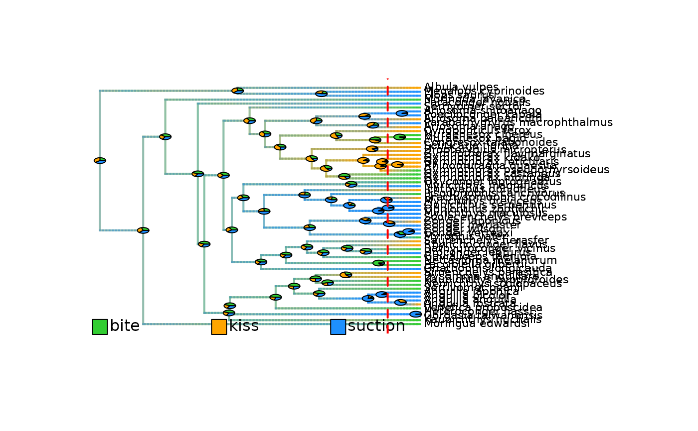
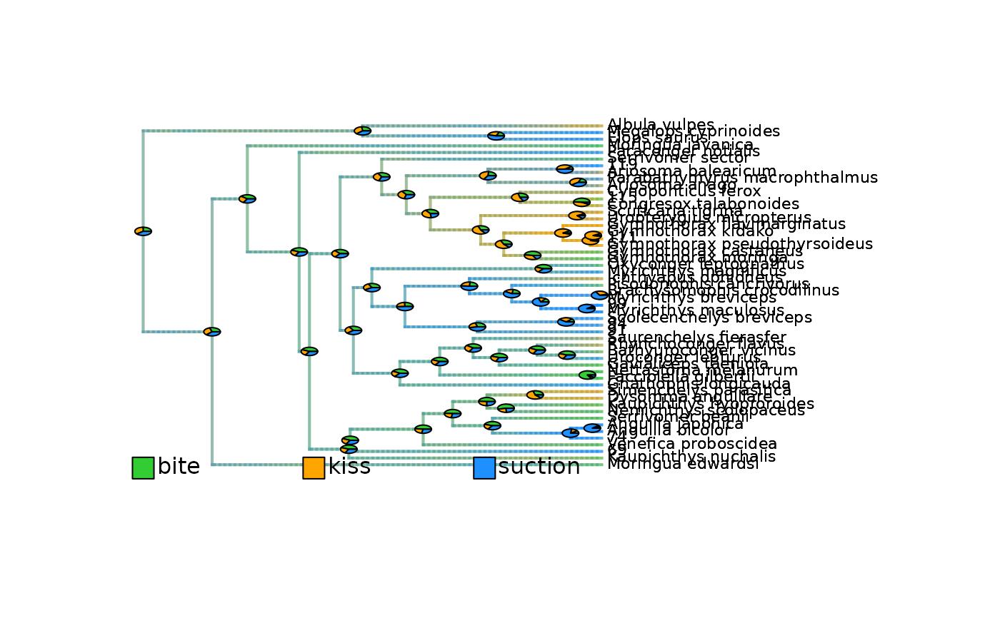
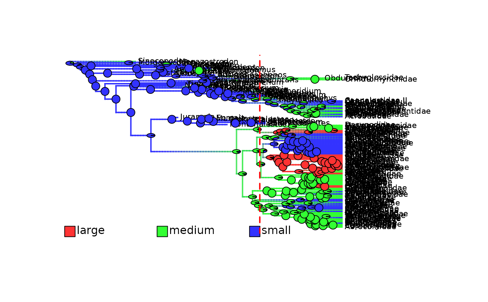

Extract categorical trait data mapped on a phylogeny at a given time in the past
Source:R/extract_most_likely_trait_values_for_focal_time.R
extract_most_likely_states_from_densityMaps_for_focal_time.RdExtracts the most likely states found along branches
at a specific time in the past (i.e. the focal_time).
Optionally, the function can update the mapped phylogeny (densityMaps)
such as branches overlapping the focal_time are shorten to the focal_time,
and the trait mapping for the cut off branches are removed
by updating the $tree$maps and $tree$mapped.edge elements.
Usage
extract_most_likely_states_from_densityMaps_for_focal_time(
densityMaps,
ace = NULL,
tip_data = NULL,
focal_time,
update_densityMaps = FALSE,
keep_tip_labels = TRUE
)Arguments
- densityMaps
List of objects of class
"densityMap", typically generated withprepare_trait_data(), that contains a phylogenetic tree and associated posterior probability of being in a given state along branches. Each object (i.e.,densityMap) corresponds to a state. The phylogenetic tree must be rooted and fully resolved/dichotomous, but it does not need to be ultrametric (it can includes fossils).- ace
(Optional) Numerical matrix that record the posterior probabilities of ancestral states at internal nodes, obtained with
prepare_trait_data()as output in the$aceslot. Rows are internal nodes_ID. Columns are states. Values are posterior probabilities of each state per node. Needed to provide accurate estimates of ancestral states.- tip_data
(Optional) Named character string vector of tip states. Names are nodes_ID of the internal nodes. Needed to provide accurate tip values.
- focal_time
Integer. The time, in terms of time distance from the present, at which the tree and mapping must be cut. It must be smaller than the root age of the phylogeny.
- update_densityMaps
Logical. Specify whether the mapped phylogeny (
densityMaps) provided as input should be updated for visualization and returned among the outputs. Default isFALSE. The update consists in cutting off branches and mapping that are younger than thefocal_time.- keep_tip_labels
Logical. Specify whether terminal branches with a single descendant tip must retained their initial
tip.labelon the updated densityMaps. Default isTRUE. Used only ifupdate_map = TRUE.
Value
By default, the function returns a list with three elements.
$trait_dataA named character string vector with ML states found along branches overlapping thefocal_time. Names are the tip.label/tipward node ID.$focal_timeInteger. The time, in terms of time distance from the present, at which the trait data were extracted.$trait_data_typeCharacter string. Define the type of trait data as "categorical". Used in downstream analyses to select appropriate statistical processing.
If update_densityMaps = TRUE, the output is a list with four elements: $trait_data, $focal_time, $trait_data_type, and $densityMaps.
$densityMapsA list of objects of class"densityMap"that contains the updateddensityMapof each state, with branches and mapping that are younger than thefocal_timecut off. The function also adds multiple useful sub-elements to the$densityMaps$treeelements.$root_ageInteger. Stores the age of the root of the tree.$nodes_ID_dfData.frame with two columns. Provides the conversion from thenew_node_IDto theinitial_node_ID. Each row is a node.$initial_nodes_IDVector of character strings. Provides the initial ID of internal nodes. Used to plot internal node IDs as labels withape::nodelabels().$edges_ID_dfData.frame with two columns. Provides the conversion from thenew_edge_IDto theinitial_edge_ID. Each row is an edge/branch.$initial_edges_IDVector of character strings. Provides the initial ID of edges/branches. Used to plot edge/branch IDs as labels withape::edgelabels().
Details
The mapped phylogeny (densityMaps) is cut at a specific time in the past
(i.e. the focal_time) and the current trait values of the overlapping edges/branches are extracted.
—– Extract trait_data —–
Most likely states are extracted from the posterior probabilities displayed in the densityMaps.
The state with the highest probability is assigned to each tip and cut branches at focal_time.
True ML estimates will be used if tip_data and/or ace are provided as optional inputs.
In practice the discrepancy is negligible.
—– Update the densityMaps —–
To obtain updated densityMaps alongside the trait data, set update_densityMaps = TRUE.
The update consists in cutting off branches and mapping that are younger than the focal_time.
When a branch with a single descendant tip is cut and
keep_tip_labels = TRUE, the leaf left is labeled with the tip.label of the unique descendant tip.When a branch with a single descendant tip is cut and
keep_tip_labels = FALSE, the leaf left is labeled with the node ID of the unique descendant tip.In all cases, when a branch with multiple descendant tips (i.e., a clade) is cut, the leaf left is labeled with the node ID of the MRCA of the cut-off clade.
The categorical trait mapping in densityMap ($tree$maps and $tree$mapped.edge) is updated accordingly by removing mapping associated with the cut off branches.
See also
cut_phylo_for_focal_time() cut_densityMaps_for_focal_time()
Associated main function: extract_most_likely_trait_values_for_focal_time()
Sub-functions for other types of trait data:
extract_most_likely_trait_values_from_contMap_for_focal_time()
extract_most_likely_ranges_from_densityMaps_for_focal_time()
Examples
# ----- Example 1: Only extent taxa (Ultrametric tree) ----- #
## Load categorical trait data mapped on a phylogeny
data(eel_cat_3lvl_data, package = "deepSTRAPP")
# Explore data
str(eel_cat_3lvl_data, 1)
#> List of 6
#> $ densityMaps :List of 3
#> $ trait_data_type : chr "categorical"
#> $ simmaps :Class "multiPhylo"
#> List of 100
#> $ ace : num [1:60, 1:3] 0.26 0.3 0.39 0.43 0.43 0.44 0.43 0 0.47 0.49 ...
#> ..- attr(*, "dimnames")=List of 2
#> $ best_model_fit :List of 4
#> ..- attr(*, "class")= chr [1:2] "gfit" "list"
#> $ model_selection_df:'data.frame': 5 obs. of 6 variables:
eel_cat_3lvl_data$densityMaps # Three density maps: one per state
#> $Density_map_bite
#> Object of class "densityMap" containing:
#>
#> (1) A phylogenetic tree with 61 tips and 60 internal nodes.
#>
#> (2) The mapped posterior density of a discrete binary character
#> with states (Not bite, bite).
#>
#>
#> $Density_map_kiss
#> Object of class "densityMap" containing:
#>
#> (1) A phylogenetic tree with 61 tips and 60 internal nodes.
#>
#> (2) The mapped posterior density of a discrete binary character
#> with states (Not kiss, kiss).
#>
#>
#> $Density_map_suction
#> Object of class "densityMap" containing:
#>
#> (1) A phylogenetic tree with 61 tips and 60 internal nodes.
#>
#> (2) The mapped posterior density of a discrete binary character
#> with states (Not suction, suction).
#>
#>
# Set focal time to 10 Mya
focal_time <- 10
## Extract trait data and update densityMaps for the given focal_time
# Extract from the densityMaps
eel_cat_3lvl_data_10My <- extract_most_likely_states_from_densityMaps_for_focal_time(
densityMaps = eel_cat_3lvl_data$densityMaps,
# ace = eel_cat_3lvl_data$ace,
focal_time = focal_time,
update_densityMaps = TRUE)
#> WARNING: No ancestral character estimates (ace) for internal nodes have been provided. Using most likely states extracted from the densityMaps instead.
#> WARNING: No tip data have been provided. Using states extracted from the densityMaps instead.
## Print trait data
str(eel_cat_3lvl_data_10My, 1)
#> List of 4
#> $ trait_data : Named chr [1:52] "bite" "bite" "suction" "bite" ...
#> ..- attr(*, "names")= chr [1:52] "Moringua_edwardsi" "Kaupichthys_nuchalis" "69" "Venefica_proboscidea" ...
#> $ focal_time : num 10
#> $ trait_data_type: chr "categorical"
#> $ densityMaps :List of 3
eel_cat_3lvl_data_10My$trait_data
#> Moringua_edwardsi Kaupichthys_nuchalis
#> "bite" "bite"
#> 69 Venefica_proboscidea
#> "suction" "bite"
#> 74 Anguilla_bicolor
#> "suction" "suction"
#> Anguilla_japonica Serrivomer_beanii
#> "suction" "bite"
#> Nemichthys_scolopaceus Kaupichthys_hyoproroides
#> "bite" "bite"
#> Dysomma_anguillare Simenchelys_parasitica
#> "kiss" "kiss"
#> Gnathophis_longicauda Facciolella_gilbertii
#> "suction" "bite"
#> Nettastoma_melanurum Gavialiceps_taeniola
#> "bite" "bite"
#> Uroconger_lepturus Bathyuroconger_vicinus
#> "suction" "bite"
#> Rhynchoconger_flavus Saurenchelys_fierasfer
#> "kiss" "kiss"
#> 91 94
#> "suction" "suction"
#> Scolecenchelys_breviceps Myrichthys_maculosus
#> "suction" "suction"
#> 99 Myrichthys_breviceps
#> "suction" "suction"
#> Brachysomophis_crocodilinus Pisodonophis_cancrivorus
#> "suction" "bite"
#> Ichthyapus_ophioneus Myrichthys_magnificus
#> "kiss" "suction"
#> Oxyconger_leptognathus Gymnothorax_moringa
#> "bite" "bite"
#> Gymnothorax_castaneus Gymnothorax_pseudothyrsoideus
#> "bite" "kiss"
#> 111 Gymnothorax_kidako
#> "kiss" "kiss"
#> Gymnothorax_flavimarginatus Uropterygius_micropterus
#> "kiss" "kiss"
#> Scuticaria_tigrina Congresox_talabonoides
#> "kiss" "kiss"
#> 115 Cynoponticus_ferox
#> "bite" "kiss"
#> Ariosoma_anago Parabathymyrus_macrophthalmus
#> "kiss" "suction"
#> Ariosoma_balearicum 119
#> "kiss" "suction"
#> Serrivomer_sector Paraconger_notialis
#> "bite" "suction"
#> Moringua_javanica Elops_saurus
#> "bite" "suction"
#> Megalops_cyprinoides Albula_vulpes
#> "suction" "kiss"
## Plot density maps as overlay of all state posterior probabilities
# Plot initial density maps with ACE pies
plot_densityMaps_overlay(densityMaps = eel_cat_3lvl_data$densityMaps, fsize = 0.5)
abline(v = max(phytools::nodeHeights(eel_cat_3lvl_data$densityMaps[[1]]$tree)[,2]) - focal_time,
col = "red", lty = 2, lwd = 2)

# Plot updated densityMaps with ACE pies
plot_densityMaps_overlay(eel_cat_3lvl_data_10My$densityMaps, fsize = 0.7)

# ----- Example 2: Include fossils (Non-ultrametric tree) ----- #
## Test with non-ultrametric trees like mammals in motmot
## Prepare data
# Load mammals phylogeny and data from the R package motmot included within deepSTRAPP
# Data source: Slater, 2013; DOI: 10.1111/2041-210X.12084
data("mammals", package = "deepSTRAPP")
# Obtain mammal tree
mammals_tree <- mammals$mammal.phy
# Convert mass data into categories
mammals_mass <- setNames(object = mammals$mammal.mass$mean,
nm = row.names(mammals$mammal.mass))[mammals_tree$tip.label]
mammals_data <- mammals_mass
mammals_data[seq_along(mammals_data)] <- "small"
mammals_data[mammals_mass > 5] <- "medium"
mammals_data[mammals_mass > 10] <- "large"
table(mammals_data)
#> mammals_data
#> large medium small
#> 36 83 92
## Produce densityMaps using stochastic character mapping based on an equal-rates (ER) Mk model
mammals_cat_data <- prepare_trait_data(tip_data = mammals_data, phylo = mammals_tree,
trait_data_type = "categorical",
evolutionary_models = "ER",
nb_simulations = 100,
plot_map = FALSE)
#>
#> 2025-10-17 10:16:07.638599 - Fit 1 evolutionary model(s): ER.
#>
#> ------ ER model ------
#>
#> GEIGER-fitted comparative model of discrete data
#> fitted Q matrix:
#> large medium small
#> large -0.006199429 0.003099714 0.003099714
#> medium 0.003099714 -0.006199429 0.003099714
#> small 0.003099714 0.003099714 -0.006199429
#>
#> model summary:
#> log-likelihood = -152.749035
#> AIC = 307.498071
#> AICc = 307.517210
#> free parameters = 1
#>
#> Convergence diagnostics:
#> optimization iterations = 100
#> failed iterations = 0
#> number of iterations with same best fit = 100
#> frequency of best fit = 1.000
#>
#> object summary:
#> 'lik' -- likelihood function
#> 'bnd' -- bounds for likelihood search
#> 'res' -- optimization iteration summary
#> 'opt' -- maximum likelihood parameter estimates
#>
#> 2025-10-17 10:16:08.631235 - Compare model fits.
#>
#> model logL k AIC AICc delta_AICc Akaike_weights rank
#> ER ER -152.749 1 307.4981 307.5172 0 100 1
#> 2025-10-17 10:16:08.633 - Run simulations for stochastic mapping.
#>
#> make.simmap is sampling character histories conditioned on
#> the transition matrix
#>
#> Q =
#> large medium small
#> large -0.006199429 0.003099714 0.003099714
#> medium 0.003099714 -0.006199429 0.003099714
#> small 0.003099714 0.003099714 -0.006199429
#> (specified by the user);
#> and (mean) root node prior probabilities
#> pi =
#> large medium small
#> 0.3333333 0.3333333 0.3333333
#> Done.
#> 2025-10-17 10:16:24.379895 - Extract ACE as posterior sampling from stochastic mapping.
#> 2025-10-17 10:16:24.883931 - Create densityMaps by summarizing simulations of evolutionary history (simmaps).
#>
#> 2025-10-17 10:16:26.234935 - Posterior probability computed for edge n°100/420
#> 2025-10-17 10:16:27.151475 - Posterior probability computed for edge n°200/420
#> 2025-10-17 10:16:28.275843 - Posterior probability computed for edge n°300/420
#> 2025-10-17 10:16:29.426728 - Posterior probability computed for edge n°400/420
#> 2025-10-17 10:16:29.770539 - Posterior probabilities computed for State = large - n°1/3
#> 2025-10-17 10:16:31.155064 - Posterior probability computed for edge n°100/420
#> 2025-10-17 10:16:32.072728 - Posterior probability computed for edge n°200/420
#> 2025-10-17 10:16:33.207108 - Posterior probability computed for edge n°300/420
#> 2025-10-17 10:16:34.407124 - Posterior probability computed for edge n°400/420
#> 2025-10-17 10:16:35.231667 - Posterior probabilities computed for State = medium - n°2/3
#> 2025-10-17 10:16:36.575179 - Posterior probability computed for edge n°100/420
#> 2025-10-17 10:16:37.453728 - Posterior probability computed for edge n°200/420
#> 2025-10-17 10:16:38.5431 - Posterior probability computed for edge n°300/420
#> 2025-10-17 10:16:39.709507 - Posterior probability computed for edge n°400/420
#> 2025-10-17 10:16:40.061243 - Posterior probabilities computed for State = small - n°3/3
# Set focal time
focal_time <- 80
## Extract trait data and update densityMaps for the given focal_time
# Extract from the densityMaps
mammals_cat_data_80My <- extract_most_likely_states_from_densityMaps_for_focal_time(
densityMaps = mammals_cat_data$densityMaps,
focal_time = focal_time,
update_densityMaps = TRUE)
#> WARNING: No ancestral character estimates (ace) for internal nodes have been provided. Using most likely states extracted from the densityMaps instead.
#> WARNING: No tip data have been provided. Using states extracted from the densityMaps instead.
## Print trait data
str(mammals_cat_data_80My, 1)
#> List of 4
#> $ trait_data : Named chr [1:22] "medium" "medium" "medium" "medium" ...
#> ..- attr(*, "names")= chr [1:22] "228" "259" "260" "261" ...
#> $ focal_time : num 80
#> $ trait_data_type: chr "categorical"
#> $ densityMaps :List of 3
mammals_cat_data_80My$trait_data
#> 228 259 260 261 275
#> "medium" "medium" "medium" "medium" "medium"
#> 336 340 348 Zalambdalestes Asioryctes
#> "medium" "medium" "medium" "small" "small"
#> Ukhaatherium Kennalestes 369 Mayulestes 390
#> "small" "small" "small" "medium" "medium"
#> Turgidodon Didelphodon Pediomys Albertatherium Asiatherium
#> "medium" "medium" "small" "small" "small"
#> Deltatheridium 410
#> "medium" "medium"
## Plot density maps as overlay of all state posterior probabilities
# Plot initial density maps with ACE pies
plot_densityMaps_overlay(densityMaps = mammals_cat_data$densityMaps, fsize = 0.7)
abline(v = max(phytools::nodeHeights(mammals_cat_data$densityMaps[[1]]$tree)[,2]) - focal_time,
col = "red", lty = 2, lwd = 2)
# Plot updated densityMaps with ACE pies
plot_densityMaps_overlay(mammals_cat_data_80My$densityMaps, fsize = 0.8)
